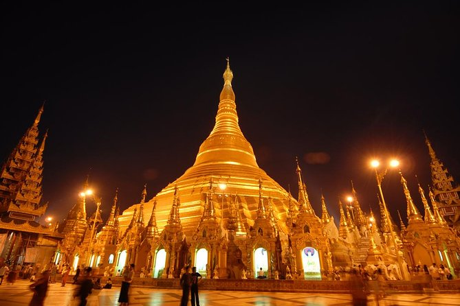

Done By Team Briffon

Shwedagon Pagoda is located on Singuttara Hill,51-metre high hill which is in the center of Yangon.The total height of the pagoda is 112m and it stands 170m above the sea level. Actually, ShwedagonZedi Daw is the formal name of the Shwedagon Pagoda which means The Great Golden Mountain Stupa. According to legends, it is more than 2,500 years old dating back to the lifetime of the Buddha so there is no doubt that it became the oldest pagoda in Burma. Shwe Dagon Pagoda is also the landmark of Yangondue of many interesting and unbelievable history. Provided that, it can attract the tourist and can find the budget for government the most in Yangon.

It is a major market located in Pabedan township which is in central Yangon, Myanmar. It’s also formerly called the Scott Market. It is especially known for its colonial architecture and interior cobblestone streets. Provided that, it became a major tourist destination. Not only that but also the bazaar is dominated by antique, Burmese handicraft and jewelriesshops, art galleries, and clothing stores.Bogyoke Market is majorly popular for exchanging currency.Remember that the market always closes on Monday.
Karaweik Palace is located in the South East corner of Kandawgyi Lake, a large lake in downtown Yangon.It is famous because of its design and inner decoration. It looks like a huge golden barge floating on Kandawgyi Lake, glittering in the sun.After dark the barge is lit up in spotlights, the golden shadow reflecting in the water of Lake Kandawgyi. Karaweik Palace was built between 1972 and 1974, off the eastern shore of the lake. Its dimensions are absolutely impressive so that becomes the main reason of being a tourist attraction.
The Taukkyan War Cemetery is a cemetery for soldiers from the British Commonwealth who died in battle in Burma during the Second World War. The cemetery is located in Taukkyan town, in the township of Mingaladon, on the main highway No 1 (Pyay Road), Yangon. It is observed by the Commonwealth War Graves Commission. The cemetery contains the graves of 6,374 soldiers who died in the Second World War, the graves of 52 soldiers who died in Burma during the First World War. Accordingly, there is no doubt that Htahk Kyant War Memorial Cemetery is famous in Yangon. Due to its design and memory, it become one of the marvelous landmarks in Yangon.
The only surviving original Lion Throne of the Burmese monarchs is the main attraction of the museum. There are more than 4000 permanent objects in the museum. The museum is majorly prominent because of its art design, creation and history of Myanmar. There are so many interesting things such as extensive collection of ancient artifacts, ornaments, work of art, inscriptions and historic memorabilia, related to history, culture and civilization of Burmese people. Museum is 5 story building and it’s quite spacious inside. It’s would be a perfect choice for the people who are fond of historical things. But remember that it’s only open from 9:30 am to 4:30 pm, except Mondays and public holidays.